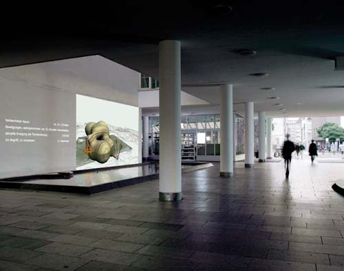
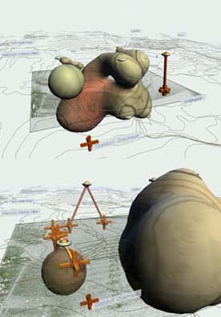
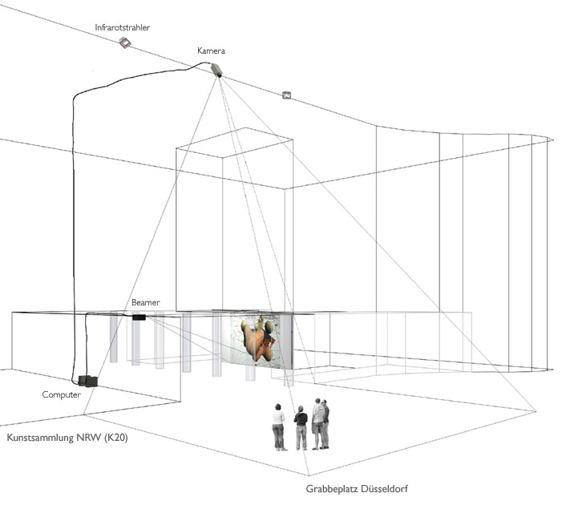

| zeitraum (51° 13.66 nord, 6° 46.523 ost) |
|||||||||||||
|  |

|
|
|||||||||||
|
Installationsansicht
am K20 in Düsseldorf
|
screen
prints
|
||||||||||||
|  | |||||||||||||
| kontext | |||||||||||||
| Die Installation Zeitraum ist die aktuelle „inoutsite“- Installation in der Reihe der Videotracking-Installationen für den öffentlichen Raum | |||||||||||||
| installation | |||||||||||||
| Man
sieht eine virtuelle Skulptur, die Raumhüllen entstehen und verschwinden
läßt. Diese sich ständig ändernde Skulptur wird von
dem Geschehen auf dem Grabbeplatz gesteuert. Wie eine natürlich gewachsene
Architektur ist diese Form in die Höhenlinien der näheren Umgebung
des augenblicklichen Standortes des Betrachters eingebettet. Die Positionen
der Menschen auf dem Grabbeplatz sowie die Position des Betrachter des Bildes
werden mit roten Kreuzen markiert. Verbindungslinien zeigen von der markierten
Person etwa auf die Stelle in den Raumhüllen, wo die Menschen die generierte
Form beeinflussen. Die Installation besteht aus einer nächtlichen Projektion auf die Brunnenwand im Durchgang von K20. Auf dem Dach der Kunstsammlung sind zwei Infrarotstrahler und eine Infrarot-Kamera installiert. Die Strahler gleichen das fehlende Tageslicht aus, damit die Kamera die Bewegungen auf dem Platz aufnehmen kann. Das durch die Strahler geschaffene gleichmäßige Licht ist eine wichtige Voraussetzung, um aus dem Videobild die Bewegungen der Menschen ableiten zu können. Dies leistet ein Video-Tracking-Programm.. Es wird festgestellt, wo sich auf dem Platz etwas bewegt, indem das aktuelle Videobild mit einem zuvor vom leeren Platz aufgenommenen Bild verglichen wird. Das Ergebnis wird wiederum nach verschiedenen „Blobs“ sortiert. „Blob“ steht für „Binary Large Object“ und bezeichnet ein Feld aus nicht strukturierten Koordinaten, das sich gleichförmig bewegt. Diese bewegten Datenfelder werden an eine Grafik- und Soundprogrammierung weitergeleitet, die aus den abstrahierten Spuren die virtuelle Skulptur errechnet. In dieser werden die Bewegungsspuren interpretiert. Auch in früheren Installationen wie „memory space“ (2002), „trace pattern II“ (1998) oder „inoutsite I“ (1998) und „inoutsite II“ (1999) ist auf der Grundlage einer Videotextur das eingespeiste Videobild sichtbar, damit die Menschen, die dieses Bild anschauen, sich selbst (auf dem Platz) im virtuellen Bild wiederentdecken können. So wird deutlich, woraus sich die virtuellen Formen, die Wolken oder Pfeile, errechnen. |
|||||||||||||
| konzept | |||||||||||||
|
Die Installation
befasst sich mit architektonischen und stadtplanerischen Konzepten. Es
soll eine neue, andere Art von Entwurfstechnik ausprobiert werden, die
sich an der Beobachtung des Verhaltens von Menschen in Bezug zur Architektur
orientiert. Ziel ist Stadt oder Architektur als einen dynamischen Organismus
anschaulich zu machen. Stadt und Menschen als etwas Kollektives, ständig
sich Wandelndes zu begreifen, ist das, was die Installation vermitteln
möchte.
|
top | ||||||||||||
| Das System, so wie wir es bei diesen mittlerweile sechs „inoutsite“-Installationen anwenden, erlaubt es nicht, maschinell den Menschen in seiner Individualität wahrzunehmen. Es geht ja auch nicht darum, mit einem Überwachungssystem zu erkennen, was den einzelnen Menschen ausmacht (denn das können wir Menschen immer noch besser als Maschinen), sondern es geht darum, Ortsqualitäten wahrzunehmen und diese anhand der Menschen und anhand ihres Verhaltens zu testen. Es geht um die Erkenntnis von Verhaltensmustern, aber nicht als Beschreibung des Individuums. Vielmehr soll der Platz individualisiert werden, um schließlich den Charakter dieses Ortes festzustellen. | top | ||||||||||||
|
|
datenverarbeitung | ||||||||||||
| Bei der Aufzeichnung von Spuren ist es so, daß die Art der Computer-Berechnung, die innerhalb der Installation vorgenommen wird, darauf abzielt, den Platz zu charakterisieren, wobei natürlich das Sammeln der verschiedenen individuellen Spuren, das Vergleichen und Auswerten dieser Spuren in Bezug auf das Gesamte wesentlich wird. Die früheren Installationen wie „trace pattern I“ (1997) und „trace pattern II“ (1998), sind eindeutig auf die Interaktion der Personen untereinander ausgerichte. Das Verhalten der Personen wird aufgenommen, verstärkt und interpretiert: Gehen sie nah aneinander? Gehen sie aufeinander zu? Gehen sie voneinander weg? Gibt es sogenannte Tracks, d.h. laufen mehrere Personen im Gleichschritt? Diese Beobachtungen fließen in die Interpretation ein. Bei der aktuellen Installation in K20 wird der Raum in der Form eines bzw. mehrerer Körper dargestellt. Diese Körper haben Ein- und Ausgänge, Öffnungen und Abschlüsse, sie werden aus kleinen Einheiten gebündelt und verschmelzen zu einem großen Ganzen oder teilen sich. Sie blähen sich auf oder bilden Löcher, die größer werden können, bis sich die Körper auflösen. All diese räumlichen Elemente werden durch das Verhalten der Leute bestimmt. Wir mappen gleichsam die Spuren der Besucher des Platzes gemäß den verschiedenen Geh-Geschwindigkeiten und gemäß ihrer Häufigkeit vor Ort auf eine mathematische Form, eine Isofläche, die sich dem Verhalten entsprechend ändert. | |||||||||||||
| das neuronale netz | |||||||||||||
|
Das neuronale
Netz, hier die Kohonenkarte lernt durch Selbstorganisation. Das ist eine
Methode des Lernens aufgrund der Nachbarschaftsbeziehungen von Neuronen
untereinander. Es wird eine Netzstruktur aufgebaut, die das, was auf dem
Platz ist, abbildet.
Darüber hinaus ist die klassische SOM um Eigenschaften verändert, um das Problem zu lösen, daß sich daraus ergibt, daß es sich beim beobachteten Raum um eine begrenzte Fläche handelt. Denn am Rand bestehen andere Bedingungen zur Verrechnung von wahrgenommenen Bewegungen als in der Mitte, da der Zustand eines Ortes jeweils auch durch seine Nachbarschaft begründet wird. In der Simulation von physikalischen Prozessen definiert man die Beobachtungsfläche einfach als Torus oder Kugel, wobei das, was beispielsweise am rechten Bildrand verschwindet, am linken wieder auftaucht. Dies macht für einen realen Platz allerdings keinen Sinn, weshalb wir das Verfahren modifiziert haben: wir lassen in Regionen zu großer Impulsdichte die Neuronen abwärts in eine zweite Ebene wandern, die die Neuronen auf nächstgelegene Stellen mit Neuronenmangel verteilt. Dadurch haben wir ein kleinräumiges zyklisches Energieauswertungssystem geschaffen, das verhindert, daß von der SOM nichts als ein Knäuel in der Mitte des Platzes übrig bleibt (siehe Grafiken) – Das wäre nichts anderes als eine zu hohe Informationsdichte, die keinerlei Information liefern kann (quasi ein schwarzes „Datenloch“). Für mich als Künstlerin ist die Anwendung neuronaler Netze sehr spannend, weil sie von mir verlangen, daß ich mein gestalterisches und visuelles Wollen zugunsten von Prozessen zurücknehme, die mit Hilfe dieses Kameraauges von sich aus ablaufen – tatsächlich aber nicht über die Kamera, sondern über die Leute, die sich im Fokus der Kamera befinden, also über das Bild vom Platz. Da die rechnerinterne Datenverarbeitung dem menschlichen Wahrnehmungsapparat nachgeformt ist, verlangt sie von mir, daß ich mir auch über die Grenzen der Wahrnehmung und über die Möglichkeiten und Unmöglichkeiten der Projektion von Wissen Gedanken mache. |
|||||||||||||
| die isofläche | |||||||||||||
|
Wie
bereits erwähnt, wird der Grabbeplatz im virtuellen Bild durch eine
Videotextur wiedergegeben. Sie markiert die mit dem Tracking-Programm
erfaßte Fläche, über die die Rechenoperationen einen abstrakten
Raum entstehen lassen. Die Knoten der SOM bilden in diesen Raum Bahnen,
genährt durch Impulse, die auf die Geschwindigkeit, Richtung und
die Verweildauer der Passanten zurückgehen. So wird die ebene Trackingfläche
um eine zusätzliche Dimension erweitert. Um die räumlichen Beziehungen
der Knoten nicht nur als Punkte im Raum, sondern auch in ihrem Verhältnis
zueinander zu visualisieren, lassen wir in der Umgebung eines jeden Knotens
eine gedachte Potentialfunktion herrschen. Diese Funktion wird als Fläche
im Raum dargestellt. Diese folgt der Bahn eines jeden Knotens und paßt
ihre Gestalt der aktuellen Rolle in der SOM an. Solche Flächen nennt
man Isoflächen. Sie werden benutzt, um beispielsweise die Homogenität
von Energiezuständen (hier: Potentialzuständen) innerhalb eines
Kontinuums darzustellen. Alle auf dieser Fläche liegenden Punkte
repräsentieren dann einen gleichwertigen Zustand. Die Potentialfunktionen
– je eine für einen Knoten – überlappen sich oder
gehen sich aus dem Weg; sie verstärken sich untereinander oder löschen
sich gegenseitig aus. Dieses turbulente Geschehen macht Flächen sichtbar,
die, einer Seifenhaut vergleichbar, ineinander verschmelzen, voneinander
abtropfen oder sich in unendlich kleine Einheiten verlieren. In der arithmetischen
Summe aller einzelnen Potentiale liegt der Schlüssel zu diesen Flächen:
Es werden alle Punkte im Raum bestimmt, an denen die Potentialsumme einen
bestimmten (von uns gewählten) Zahlenwert erreicht. Die Gesamtheit
dieser unzähligen Punkte (und damit das virtuell-skulpturale Gebilde)
erscheint als glattes oder zerklüftetes, als löchriges oder
kompaktes Gebilde, dessen ständig bewegte Oberfläche eine neue
Sichtweise auf die Entwicklung der SOM bietet. In Bezug auf den Grabbeplatz
stellt die SOM die raumzeitlichen Verzerrungen des Platzes dar –
wenn man ihn nicht als kontinuierliches Raumgebilde, sondern als Summe
von einzelnen „Weltenlinien“ der Passanten, also von Wegen einzelner
Menschen, die sich hier zufällig kreuzen, sieht. Die SOM löst
aber auch die Zeit auf, denn es kreuzen sich auch Wege, die sich zeitlich
versetzt ereigneten. Insofern ist die SOM ein Speicher persönlicher
Zeiten, der dem Grabbeplatz eine virtuelle Gestalt verleiht. Die Isoflächen
haben die Funktion, Gebiete, die viel begangen und genutzt werden, von
den Bereichen mit spärlicher Nutzung zu unterscheiden. Auswölbungen
markieren die häufige Anwesenheit von Personen, Löcher die Abwesenheit.
Die Dynamik der Isoflächen folgt der Dynamik der Ansammlungen von
Menschen, die, wenn sie beispielsweise eine gewisse Dichte erreichen,
umkippen und sich wieder auflösen, um zu große Enge zu vermeiden.
|
top | ||||||||||||
| sound | |||||||||||||
| Beim Sound handelt sich um eine Form von „Monitoring“, das die aktuellen Positionen der Menschen auf dem Platz und deren in einem Langezeitorganismus verrechnete Form referenziert. Beides wird graphisch als Position in dem Körper repräsentiert, der als Gedächtnisform in dem virtuellen Bild sichtbar ist. Der Sound wird ebenfalls auf die aktuelle Position Bezug nehmen; eine Veränderung der Position des Betrachters verändert somit auch den Sound. Wenn man geht, ist also etwas anderes hörbar als wenn niemand auf dem Platz ist. Zum anderen soll der Sound – und das ist die eigentliche Qualität von Geräusch – Informationen über das freigeben, was auf dem Platz passiert. Und er soll über Sprache eine Kategorisierung vornehmen. | top | ||||||||||||
| architectur-kontext | |||||||||||||
| Die Architektur, wie wir sie kennen, kann den Bedürfnissen der Benutzer nicht entsprechen, weil sie aus Immobilien, aus unbeweglichen, modernen, vielleicht siebzig oder ein paar hundert Jahre alten Gebäuden besteht. Man kann sich im Augenblick flexible Gebäude noch nicht vorstellen. Aber die Lebenszeit der Gebäude wird kürzer, wenn man sich Resultate von Konferenzen wie „shrinking cities“ ansieht. Der Trend geht dahin, Häuser zu planen, die auf- und abbaubar, die transferierbar und die in ihren Funktionen flexibel sind. Das ist nicht nur meine Forderung, sondern auch die von Stadtplanern. Mein Ansatz ist es, von Gebäudeformen wegzukommen, die, wie es früher der Bildhauer gemacht hat, individuelle Setzungen vornehmen; die gedacht sind als ein Körper, so wie ich mich empfinde; als ein Zeichen, so wie ich es schön finde. Die neu zu entwerfenden Gebäude müssen sich selbstverständlich funktional in den erstellten Nutzungsplan einfügen. Aber diese Gebäude sollten während ihrer Nutzung ihr Umfeld beobachten um festzustellen, ob sie ihre Aufgabe erfüllen. Es stellt sich die Frage, wie so ein Konzept formuliert werden könnte, wenn es nicht nur aufgrund der Idee einer Person oder einer Expertenkommission entwickelt wurde, sondern wenn es noch einmal der Bewertung der Öffentlichkeit unterworfen wird. Es ist nicht neu zu behaupten, daß sich die Architektur mit der Einführung des Computers geändert hat, weil die Entwurfsmethoden mit Tools, CAD-Programmen usw. andere geworden sind. „Blob Architecture“ bezeichnet eine recht junge Architektur, die weniger baut denn entwirft. Meistens entstehen biomorphe Gebäudeformen in 3D-Programmen. Es werden Formen beispielsweise durch die Beobachtung von Umweltfaktoren entwickelt, die manifest werden. Insofern könnte man die Installation am Grabbeplatz als Vertreter dieser Form von Architektur sehen. Das Ziel meiner Projekte ist es jedoch, nicht einfach andere Formen für Häuser zu finden, die dann doch wieder nur statische Monumente werden, sondern interaktive Verfahren zu testen, um zu sehen, welche wahrnehmbaren Spuren sinnvolle Strukturen für Gebäude liefern. „Blob Architecture“ wird sich an der Sinnhaftigkeit der an den Blobs zu vollziehenden Datenexplorationen zu bewähren haben. Diese Methoden der Verarbeitung implizieren ein Menschenbild, das möglicherweise unserer zukünftige Architektur zu Grunde liegt. | top | ||||||||||||
| vorschau | |||||||||||||
| Im
nächsten Projekt der inoutsite-Reihe wird die Rückkehr zum Realraum
anvisiert. Heute jedoch wäre die Rückkehr zur (statischen) Form
und zum Skulpturalen zu früh, weil wir mit der Auswertung der Interaktion
noch nicht so weit gekommen sind, daß wir wissen, was zu bauen wäre,
insbesondere solange die Materialien der Gebäude noch nicht flexibel
sind. Auch sind komplexere Schnittstellen notwendig, die eine größere Bandbreite von wahrnehmbaren menschlichen Äußerungen auswerten können. Im Virtuellen ist man heute mit den Methoden sehr viel flexibler und weniger schädigend, solange man noch nicht baut und das Ergebnis in der visuellen und akustischen Überprüfung durch die Benutzer belässt. Zur Gestaltung des Realraums kann man übergehen, wenn die Architektur so veränderbar ist, wie es das interaktive System fordert. |
top | ||||||||||||
| mitarbeiter | |||||||||||||
| Matthias
Weber, Freiberg Peter Serocka, Shanghai Yunchul Kim, Köln Ursula Damm, Düsseldorf |
|
||||||||||||